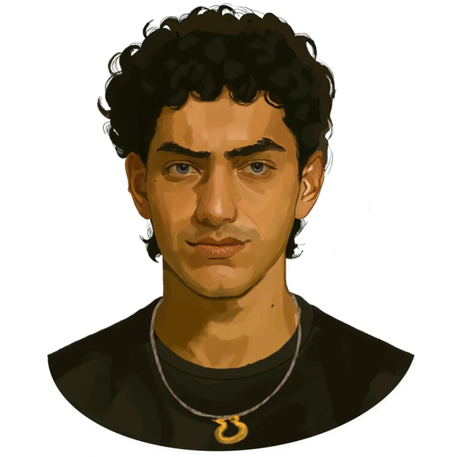

A történet
„Ahogy felvirrad az 50. Éhezők Viadalának napja, félelem keríti hatalmába Panem kerületeit. Idén, a
második Nagy
Mészárlás tiszteletére kétszer annyi kiválasztottat visznek el otthonaikból. Visszatérve a 12. körzetbe,
Haymitch Abernathy próbál nem túl sokat gondolni az esélyeire. Csak az érdekli, hogy túlélje a napot, és
a
szerelmével lehessen. Amikor Haymitch nevét kimondják, úgy érzi, minden álma szertefoszlik.
Elszakítják családjától és szerelmétől, és a Kapitóliumba szállítják a másik három 12. körzetbeli
kiválasztottal együtt: egy fiatal barátjával, aki szinte a húga, egy megszállott Oddsmesterrel és a
körzet legbeképzeltebb lányával. Ahogy elkezdődnek a Játékok, Haymitch megérti, hogy kudarcra van
ítélve. De
van benne valami, ami harcolni akar... és hogy ez a harc messze túl is visszhangozzon a halálos
arénában.”
Haymitch Abernathy portréja

© u/IllegalSympathy, Reddit
A könyv háttere
A könyv szerzője, Suzanne Collins David Hume skót filozófus munkásságából merített ihletet, különösen az implicit behódolásról és arról
a könnyedségről szóló gondolataiból, „amivel a sokakat a kevesek irányítanak”. A propaganda használatával és a
média narratíváinak erejével kapcsolatos kérdések is arra inspirálták Collinst, hogy megvizsgálja a
regényben a „Valódi vagy nem valódi?” fogalmát.